El proyecto final de la asignatura tiene como propósito general hacer uso del software ABB ROBOTSTUDIO para la programación y simulación de una celda robótica integrando los conceptos trabajados en clase de laboratorio y aplicando las herramientas de software con el objetivo de automatizar el proceso industrial asignado a cada equipo de trabajo.
INTRODUCCIÓN
En el siguiente documento se resume el trabajo de diseño de la Celda de Manufactura Robotizada a implementar en el proyecto, comenzando por
la hoja de ruta grupal para el diseño general de una CMR describiendo cada uno de los pasos
a tener presente y formulada a partir del trabajo individual. Acorde a la hoja de ruta,
se seleccionan las operaciones sobre las cuáles se enfocará el trabajo de la celda, analizando
la viabilidad de las tareas a automatizar por medio de la celda junto con el diagrama de operaciones y máquinas, generando un esquema preliminar
de la alternativa dominante con la distribución de operaciones y máquinas en las estaciones,
descripción de entradas y salidas de producto, acceso de personal, etc. Continuando, se presentan los criterios empleados para la selección de los
robots manipuladores y el posicionador para la celda. En la hoja siguiente se encuentra la matriz de riesgos en donde se analiza cada uno de los
peligros dependiendo de su nivel de riesgo y se sugieren las alternativas y elementos de protección y seguridad que se implementarán finalmente
en la celda.
SOLUCIÓN PROPUESTA
En el siguiente video se presenta de forma resumida la simulación completa de la celda robótica desde
el entorno de RobotStudio® realizando la secuencia de automatización para el proceso asignado y describiendo
la estructura y distribución de la celda, conexión de componentes inteligentes, entradas y salidas digitales,
programa de código principal, y demás elementos incorporados para la ejecución del proyecto.
Con base en el enunciado del proyecto, se requiere implementar dos robots manipuladores como mínimo para la ejecución de las tareas de automatización del proceso asignado. En ésta sección se presentan los criterios de selección empleados para elegir los robots trabajados en el proyecto, además de hacer un análisis de las herramientas seleccionadas para cada tarea.
| 1. ALCANCE DEL PROYECTO E INFORMACIÓN PRELIMINAR |
| 1.1 | Información general del cliente/empresa | ¿Quienes son? ¿Cuál es su campo de actividad? ¿Qué experiencia tienen en procesos de automatización? ¿Se cuenta con la aprobación y soporte de todas las áreas para el proyecto? ¿Conocen los procesos de manufactura y estrategias integradas por la competencia? Entre otras. |
| 1.2 | Información general del proceso de producción actual | Se espera conocer una información pre-liminar del proceso previo al estudio detallado del mismo. ¿Cómo se está realizando el proceso de fabricación? ¿Cuántos operarios y máquinas se están requiriendo en las operaciones? |
| 1.3 | Lista de problemas a resolver con la solución a implementar / Requerimientos del cliente | En general, una empresa busca en el proceso de automatización industrial una solución a determinados problemas identificados previamente dentro de sus procesos actuales. En éste punto, la organización ya debe haber planteado unos requerimientos mínimos que deben satisfacerse con el proceso de automatización. |
| 1.4 | Conformación del equipo de trabajo | Dependiendo del alcance del proyecto, se debe contar con un equipo de trabajo conformado por representantes de la empresa para las diferentes áreas involucradas (diseño de producto, control de calidad, estándar de producción, departamento económico/financiero, ingeniería de planta, manufactura, mantenimiento, etc), e incluso puede incluir un consultor externo contratado por la organización. |
| 1.5 | Expectativas del cliente y establecer objetivos de mejora del proyecto. | Los objetivos generales se deben definir en términos de: calidad, costo de la inversión, productividad, seguridad (del producto y el empleado), flexibilidad, agilidad. |
| 2. ESTUDIO DETALLADO DEL PROCESO |
| 2.1 | Recopilar la información general de la línea de producción o el proceso completo. | Estadísticas, ciclo de trabajo, tiempos, material, costos, etc. |
| 2.2 | Modelar cada una de las operaciones en el proceso de manufactura paso a paso, y dividirlas como una serie de subtareas que se realizarán en cada una de las estaciones de trabajo. | Este paso incluye cualquier ingreso y salida de material, transporte de una estación a otra, procesos de transformación y parámetros necesarios, máquinas y herramientas de trabajo, material adicional, tiempos de operación, si requiere o no inspección, etc., en general se recomienda recopilar TODA la información que se considere necesaria para realizar cada una de las operaciones. |
| 3. SELECCIÓN Y AUTOMATIZACIÓN DE LA OPERACIÓN |
| 3.1 | Seleccionar las operaciones de la línea sobre las cuales se enfocará el proceso de automatización con celdas robotizadas. | Es necesario determinar para qué tareas es viable (y rentable) implementar una solución con celda robotizada, de modo que se recupere la inversión en términos de productividad, calidad, seguridad, etc. |
| 3.2 | Modelar el diagrama simplificado de flujo de trabajo y maquinaria. | Se grafica la línea de proceso (partiendo del diagrama anterior) determinando la cantidad de máquinas y operarios requeridos, y optimizando el proceso identificando y descartando tareas que no agreguen valor a la operación ni al producto. |
| 4. DISEÑO DE LA CELDA DE MANUFACTURA ROBOTIZADA (CMR) |
| 4.1 | Analizar y validar todo la información con que se dispone para el diseño de la celda | Se recomienda que tras el proceso de estudio y modelado del diagrama actual de flujo de trabajo, se esté en capacidad de dar respuesta a las siguientes preguntas: |
| Requerimientos de desempeño: Tiempos de ciclo | ¿Cuál es el tiempo de ciclo actual del proceso? ¿Cuál subtarea requiere el mayor tiempo en el proceso? ¿Qué tan bajos son los tiempos de transporte y posicionamiento entre cada estación?. | |
| Requerimientos de desempeño: Especificaciones del manejo de material | ¿Qué tan lejos de la herramienta se encontrará el material que debe ser manipulado? ¿Qué tan cerca al producto o la máquina puede instalarse el sensor? ¿Debe moverse en dirección perpendicular u oblicua a la línea de visión? | |
| Requerimientos de desempeño: Velocidad de avance de la herramienta | ¿Qué velocidad se requiere para la operación?. | |
| Requerimientos de desempeño: Mezcla de productos | ¿Cuál es el tiempo de ciclo actual del proceso? ¿Cuál subtarea requiere el mayor tiempo en el proceso? ¿Qué tan bajos son los tiempos de transporte y posicionamiento entre cada estación?. | |
| Requerimientos de desempeño: Requerimientos del equipo | ¿Existe algún requerimiento específico para el equipo que se implementará en la celda? | |
| Requerimientos de desempeño: Requerimiento del operario de respaldo/apoyo | ¿Qué nivel de educación tiene el personal a cargo de operar la celda?. | |
| Requerimientos de desempeño: Requerimientos de producción a futuro | ¿Está en planes aumentar la línea de producción a futuro? ¿Qué crecimiento se estima? | |
| Requerimientos de desempeño: Tolerancia admitida para el proceso | ¿Con qué precisión y exactitud debe realizarse la tarea? ¿Cuál es el rango (mínimos y máximos) admitido para el producto terminado?. | |
| Requerimientos de desempeño: Tiempo de permanencia de las herramientas | ¿Se requiere un cambio constante de las herramientas por el desgaste? ¿De cuánto tiempo se estima la vida útil de las herramientas?. | |
| Requerimientos de desempeño: Presión sobre las herramientas | ¿Qué cargas externas soportará la herramienta?. | |
| Requerimientos de desempeño: Tiempo máximo de reparo | ¿De cuánto son los tiempos estimados de mantenimiento registrados para la tarea con el proceso actual?. | |
| Requerimientos de desempeño: Rutinas de mal funcionamiento | ¿Cuál es el proceso a seguir en caso de una entrada de material defectuosa en el proceso actual?. | |
| Requerimientos de desempeño: Tiempos de inactividad permitidos | ¿Con cuánto tiempo se dispone para realizar tareas de configuración o mantenimiento del proceso sin afectar la producción?. | |
| Requerimientos de diseño: Geometría de la instalación | ¿Cuál es el espacio disponible para toda la celda? ¿Se instalará sobre una superficie de qué material? ¿La plataforma es plana, redonda, o alguna otra forma? ¿Esta superficie de montaje es estática o móvil? ¿Cuál es el espacio que ocupa esa superficie?. | |
| Requerimientos de diseño: Consideraciones ambientales | ¿Se instalará en un recinto cerrado? ¿Cuál es la temperatura promedio del ambiente en °C (muy frío o muy caliente)? ¿Cuál es la humedad relativa (muy seco o muy húmedo)? ¿Cuáles son las fuentes de iluminación? ¿Hay iluminación ambiental constante o variable? ¿Hay incidencia de sol directo? ¿Hay variación en el flujo eléctrico y picos máximos? ¿En que rango puede haber vibración mecánica? ¿El aire que ingresa es filtrado o incluye impurezas? ¿Hay algún contaminante en el aire como polvo, humo, aceite o spray? | |
| Requerimientos de diseño: Accesibilidad para mantenimiento | ¿Qué velocidad se requiere para la operación?. | |
| Requerimientos de diseño: Requerimientos de relocación de equipos | ¿Se espera que la celda permanecerá fija en el mismo punto de instalación o podrá desmontarse para ser reubicada?. | |
| Requerimientos de diseño: Disponibilidad de servicios requeridos. | ¿A qué servicios se tiene acceso en el lugar de instalación? ¿La red eléctrica disponible es monofásica o trifásica? ¿existen interrupciones del servicio de energía o el suministro es constante? | |
| Requerimientos de diseño: Carga del suelo | ¿Qué tipo de piso o suelo hay presente en el área de instalación de la celda? ¿Soporta cargas elevadas? ¿Se requiere alguna adecuación para la nivelación e instalación de otras máquinas?. | |
| Requerimientos de diseño: Seguridad para máquinas y operarios | ||
| Características del producto: Orientación | ¿El producto entrará a la celda en la orientación deseada?¿o se requiere orientar la pieza para su correcta manipulación? ¿El material entrará ya separado o sobrepuesto uno sobre otro? | |
| Características del producto: Especificaciones del gripper | ¿Hay alguna particularidad a tener en consideración para la manipulación del material? ¿Qué herramientas se emplean actualmente para el proceso? | |
| Características del producto: Características de la superficie | ¿La superficie del producto es opaca o transparente? ¿qué color es? ¿es brillante o mate? ¿es liso? ¿texturizado? ¿poroso o no poroso? | |
| Características del producto: Requerimientos únicos de manipulación | ¿Existe un gripper estándar que pueda realizar la operación? ¿Hay alguna característica particular que requiera de un gripper modificado o especializado? | |
| Características del producto: Tamaño, peso y forma del producto | ¿El material del producto es metálico (ferroso, magnético), plástico, madera, con recubrimiento, etc.? ¿Cuál es el peso máximo del producto (kg)? ¿Qué dimensiones tiene (alto, ancho, largo)? ¿Cuál es su forma (prismático, poliédrico, cilindrico, esférico, cónico, etc.)? | |
| Características del producto: Inspección | ¿Se requiere una inspección de la pieza posterior a la operación? | |
| Modificaciones de equipo: Operación sin supervisión | ¿Se requiere que la celda trabaje sin supervisión? | |
| Modificaciones de equipo: Requisito aumentar el rendimiento | ¿Se espera que el rendimiento de la celda pueda controlarse para aumentar la producción? | |
| Modificaciones de equipo: Velocidades mínima/máxima de trabajo | ¿Cuáles son las velocidades actuales del proceso? | |
| Modificaciones de equipo: Requerimientos para operación automática | ¿Qué grado de autonomía se espera por parte de la celda? ¿Quienes estarán a cargo de supervisar el proceso una vez se ponga en marcha la celda? | |
| Modificaciones del proceso: Cambios en el tamaño del lote | ¿Qué tanto podrán variar las propiedades de la pieza de entrada? | |
| Modificaciones del proceso: Evaluación variable del proceso | ¿Qué tipo de información esperan recopilar durante la ejecución de la tarea? | |
| Modificaciones del proceso: Variaciones de enrutamiento | ¿El accionamiento y supervisión de la celda se realizará de forma local o remota? | |
| Modificaciones del proceso: Transferencia de datos procesados | ||
| Integración del sistema: Redes e interfaces de datos | ||
| Integración del sistema: Requerimientos de integración del hardware | ||
| Integración del sistema: Requerimientos de integración de datos | ||
| Integración del sistema: Requerimientos de la interface de usuario | ¿Qué información se debe priorizar para su visualización de la celda? | |
| Integración del sistema: Requerimientos de integración del software | 4.2 | Criterios de selección del robot | Convertir los requerimientos de la celda y las operaciones en especificaciones técnicas para la selección del robot. |
| Lista de control para determinar las especificaciones del robot | Resolución de la posición, repetibilidad, precisión. Geometria del brazo. Flexibilidad del posicionamiento. Tamaño del entorno de trabajo. Grados de libertad. Carga útil máxima y nominal. Velocidad máxima y dependiente de la carga útil. Fuerza en dirección de bajada. Requisitos de conformidad. Requerimientos de cambio de herramienta. Requerimiento de sensor de fuerza/torque. Programación (on y offline). Costo. Requerimientos especiales. Integración de visión. |
| 5. GENERACIÓN Y SELECCIÓN DE ALTERNATIVAS |
| 5.1 | Diseño preliminar de la celda de trabajo y generación de alternativas | Partiendo del diagrama de flujo y maquinaria, ahora se esboza el diseño según el tipo de celda deseada para establecer la secuencia de procesos y distribución general de máquinas y puestos de trabajo en la celda. Patiendo de los parámetros determinados y especificaciones técnicas, se pueden desligar varias alternativas de diseño. |
| 5.2 | Selección de alternativa dominante | Es un proceso interdisciplinar en que se evalúan las alternativa de diseño y bajo diferentes criterios se busca seleccionar la alternativa más óptima para el proceso. |
| 6. DETALLE DE LA SOLUCIÓN Y SIMULACIÓN |
| 6.1 | Diseño detallado de la solución | Entrar al diseño detallado aplicando los protocolos de seguridad para la integración de paradas, puestos de trabajo, cerraduras, etc., y el análisis de riesgos para el proceso. |
| 6.2 | Simulación y validación por software | Construcción de la celda en un entorno virtual implementando modelos CAD/CAE para simular las estadísticas de salida (tiempo de ciclo, costos, etc) y comparar los resultados con los valores preliminares, estableciendo el grado de mejora y cumplimiento alcanzado con la solución propuesta. |
| 7. IMPLEMENTACIÓN Y ANÁLISIS DE RESULTADOS |
| 7.1 | Implementación en físico de la celda de trabajo |
El proyecto final de la asignatura tiene como propósito general hacer uso del software ABB ROBOTSTUDIO para la programación y simulación de una celda de manufactura robotizada integrando los conceptos trabajados en clase y aplicando las herramientas de software con el objetivo de automatizar determinadas operaciones de la línea de fabricación de bicicletas.
SELECCIÓN Y AUTOMATIZACIÓN DE LA OPERACIÓN
Conforme la hoja de ruta, los primeros pasos se realizaron a partir del análisis de operaciones llevado
a cabo en la sección de Gestión de la producción y automatización , en donde modelamos cada operación por
estación de trabajo y las subtareas requeridas para cada uno de los procesos de manufactura. Partiendo de
esta información, análizamos las tareas que consumen un mayor tiempo de ciclo, la practicidad de automatizarlas
por medio de celdas robotizada y las tareas sobre las cuáles existen precedentes y por tanto se comercializan
los equipos y herramientas necesarias para su implementación, enfoncándonos en procesos repetitivos y descartando
tareas de montaje y ensamble debido a la necesidad de un equipo más especializado y las limitaciones para
inspeccionar cada uno de los productos terminados sin la intervención de un operario humano.
Posteriormente, el equipo de trabajo se reunió para debatir las opciones más viables, y finalmente se seleccionaron
las operaciones de soldadura de marcos y la limpieza de las piezas soldadas, operaciones consecutivas para así
integrarlas a una única celda de manufactura.
| ENTRADA | Estructura pre-ensamblada de secciones de tubería metálica previamente cortados y mecanizados, con puntos de soldadura iniciales para mantener cada parte en su posición definitiva. |
| SALIDA | Estructura del marco debidamente soldada en todas las uniones y totalmente limpio tras un proceso de desbarbado, lijado y pulido, listo para continuar en la línea con la operación de pintura. |
ASPECTOS GENERALES DE LA CELDA
Se plantea el diseño de una celda para integrar dos estaciones, una de soldadura ①
y otra de limpieza ② (lijado,
afinado y pulido). Considerando las características particulares de cada proceso, el entorno de trabajo requerido
y junto con el equipo y herramientas necesarios, un sólo manipulador será insuficiente y poco recomendado para
trabajar simultáneamente en dos entornos de trabajo tan diferentes, dado que ésto implicaría un cambio constante
de herramientas y un alto alcance ó la implementación de un séptimo eje (o riel) para desplazarse entre un espacio
de trabajo y otro. Por ésta razón, se plantean como mínimo dos robots manipuladores para que cada uno ejecute una
tarea en un espacio adaptado para la respectiva operación, además de un posible tercer mecanismo para controlar la
entrada y salida de material a la celda y realizar el transporte de piezas entre una estación y otra.
DISEÑO PRELIMINAR DE LA CELDA DE TRABAJO
Partiendo del diagrama de flujo y maquinaria, se esboza un diseño preliminar de la celda de manufactura robotizada,
estableciendo la secuencia de procesos en la entrada y salida del material y la distribución general de las máquinas
y puestos de trabajo en la celda. Se definen las dos estaciones con su respectivo manipulador en el centro de cada
una de estas para cubrir el mayor espacio de trabajo posible y adaptar las medidas de seguridad necesarias. Ambos
espacios de trabajo estarán separados por un tercer mecanismo que permitirá el intercambio de material entre ambas
estaciones. El flujo de entrada y salida de material se encuentra en la segunda estación, dado que el primer robot
no estará considerado para la manipulación y transporte de las piezas en la celda. La celda en su totalidad se encontrará
cercada por barreras físicas acorde a la matriz que se detallará en el análisis de riesgos.

SELECCIÓN DE ROBOTS
Dado el enfoque tomado desde el módulo de Celdas de Manufactura Robotizadas y la experiencia con el software RobotStudio
de ABB, se decide en primer lugar que la simulación, cotización y adquisición de los manipuladores se realizará con este
proveedor, dado que además de suministrarnos las licencias y herramientas de software necesarias para el diseño detallado,
es una empresa especializada con una basta experiencia en el campo de la robótica, automatización, equipamientos industriales
y otras tecnologías de ingeniería. Considerando la alta oferta en robots que brinda este proveedor, ABB dispone de una
herramienta de selección denominada Robot selector desde su página web (ingresando
aquí) la cuál permite filtrar los diferentes
modelos empleando como principales criterios de selección: la aplicación para la cuál se va a emplear, la carga útil que
manipulará el efector final y el alcance máximo. También se cuenta con un aplicativo para el cálculo y validación de la carga
llamado RobotLoad, sin embargo para el uso del mismo se requiere primero haber seleccionado el robot de trabajo entre los modelos
admitidos y contar con las especificaciones de CoG, Jx Jy Jz, y TCP de la herramienta.

 |
Arc welding, Assembly, Cleaning, Coating, Collaboration, Cutting, Deburring, Depalletizing, Die casting, Dispensing, Enamelling, Full layer palletizing, Glazing, Gluing, Grinding, Heavy arc welding, Injection moulding, Insertion, Item picking, Kitting, Loading, Loading and unloading, Machine tending, Material handling, Measuring, Packing, Painting, Palletizing, Parts inspection, Picking, Polishing, Powdering, Powertrain assembly, Premachining, Press automation, Press brake tending, Press tending, Rubber insertion, Screw driving, Screwdriving, Sealing, Small parts assembly, Spot welding, Spraying, Testing, Unloading, Welding, Packing. | Up to 7 (kg) 7 - 16 (kg) 16 - 60 (kg) 60 - 225 (kg) Over 225 (kg) |
Up to 1.55 (m) Up to 1.8 (m) 1.8 - 2.55 (m) Over 2.55 (m) |
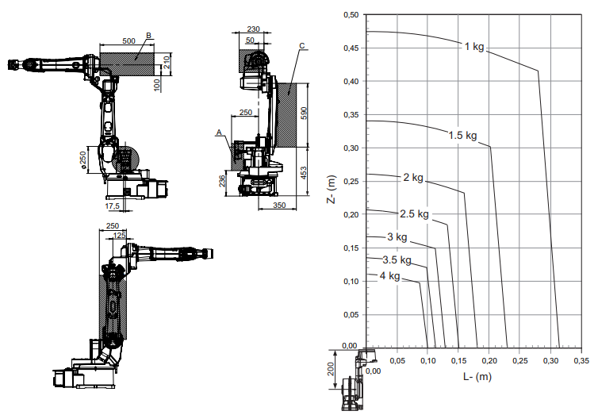
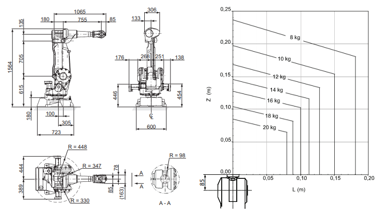
Entre las alternativas analizadas para un tercer mecanismo, se requiere que éste no sólo intervenga en el transporte de la pieza entre ambas estaciones de trabajo sino que además pueda apoyar la operación de soldadura, dado que se requerirá de una rotación de la pieza para que la herramienta del manipulador pueda alcanzar todos los puntos de unión de la estructura. El proveedor ABB cuenta así mismo con una serie de posicionadores, varios de los cuáles están diseñados especificamente para ese propósito, por tanto se analizan las opciones de la serie de posicionadores IRBP, para trabajo cooperativo con robots IRB.

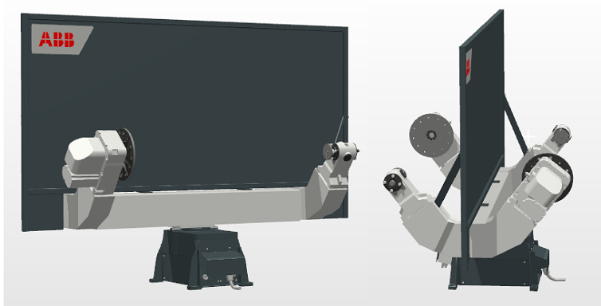
SELECCIÓN DE HERRAMIENTAS
Para la primer tarea, el robot seleccionado fue diseñado en particular para aplicaciones de soldadura, por tanto se encuentra adaptado para este
entorno de trabajo, siendo posible conectar un alimentador de alambre o electródo metálico para garantizar un suministro constante de material consumible a
la herramienta. Debido a que se trata de un manipulador para aplicación específica, no se consideró necesario emplear ninguna otra herramienta
diferente de la antorcha de soldadura estándar. Se incluyó dentro de la celda una estación de limpieza neumática de boquilla para evitar la intervención
del personal a la estación de soldadura excepto en tareas de mantenimiento.
Para la segunda tarea, se utilizó un gripper estándar con apertura y cierre neumático, adaptado para la sujeción de tubería metálica gracias
a la forma de la mordaza que garantiza el agarre y posición de la pieza a manipular.
Con esta selección de herramientas, se procedió a realizar una búsqueda de fabricantes y referencias para tener una pespectiva más amplia de los
requisitos de selección, sin embargo, dada la dificultad de encontrar modelos para su simulación, partimos de los diseños CAD disponibles entre
los complementos descargables del entorno de RobotStudio®.
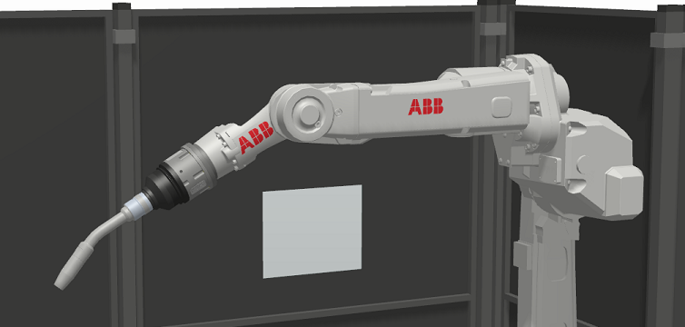
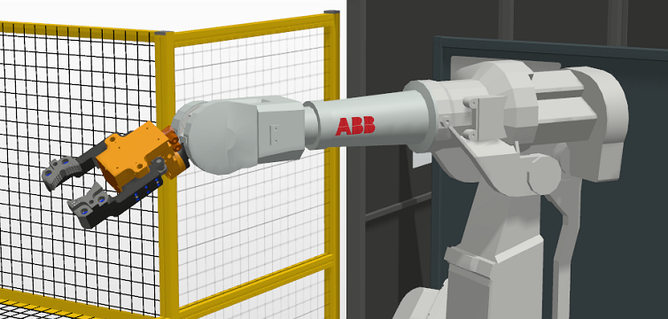
ESTRUCTURA Y CONSTRUCCIÓN DE LA CELDA
Con base en el ideal planteado por el equipo y el análisis de riesgos presentado, partimos de realizar la búsqueda de los
modelos CAD para los diversos elementos que conformarían la celda de trabajo, comenzando por insertar los modelos de los
robots previamente seleccionados desde la Biblioteca ABB junto con el posicionador de este mismo proveedor, y los diseños
CAD de las herramientas ya adaptados y configurados como tool para su aplicación en RobotStudio®.
Despúes, procedimos a incorporar el material inicial que corresponde al marco de bicicleta. A medida que se insertaban estos
elementos se iban sumando otros componentes gráficos que pese a no intervenir directamente en la simulación, juegan un papel importante
para presentar el diseño completo de la celda, como barreras físicas, operarios y máquinas, diversos elementos de seguridad, entre otros.
COMPONENTES INTELIGENTES E INTERCONEXIONES
Dado que el trabajo en el módulo se centra en el diseño de la celda de manufactura con los mecanismos seleccionados, no se consideró
necesario implementar una gran cantidad de componentes inteligentes para lograr una simulación realista de la celda de trabajo.
La ejecución del programa completo inicia con el movimiento lineal del material a la entrada de la celda, el cuál avanzará hasta ser detectado
por un sensor de línea. Una vez este sensor se activa, la pieza en movimiento se detiene y se envía una señal digital al controlador para comenzar
simultánemente la ejecución de cada uno de los módulos. El primer robot realizará una trayectoria para acercarse a la pieza recién ingresada y
una vez en posición se utilizan dos señales digitales del controlador para activar e inactivar el accionamiento del gripper. De éste modo,
el gripper se cierra con la señal respectiva y genera el agarre con la pieza, continuando con la trayectoria para maniobrarla hasta ubicarla sobre
la mesa del posicionador y terminará esta primer tarea abriendo el gripper para liberar a la pieza y retornando a su posición de home.
A medida que se ejecuta esta primer tarea, el segundo robot ejecutará una trayectoria para la limpieza de la herramienta de trabajo y aguardará
la señal de entrada de la pieza a la estación por el giro del posicionador para iniciar la tarea de soldadura. El controlador utiliza dos salidas
digitales para guiar el giro del posicionador en 180°, permitiendo además utilizar el estado de estas señales para sincronizar las tareas de ambos
módulos. Una vez finaliza la tarea de soldadura, el posicionador retorna a su punto inicial trayendo la pieza de trabajo nuevamente a la primer estación
y al tiempo que se valida la activación de esta señal, el primer módulo continúa su ejecución para realizar la tarea de limpieza. Finalmente,
el programa lleva a la pieza terminada a la posición de salida de la celda, en donde activará un sensor de línea que habilitará nuevamente el movimiento
lineal de la pieza de trabajo y reiniciará la simulación.
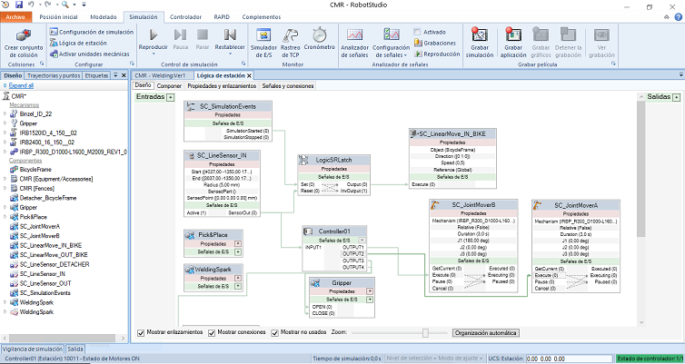
Con base en el enunciado del proyecto, se requiere implementar dos robots manipuladores como mínimo para la ejecución de las tareas de automatización del proceso asignado. En ésta sección se presentan los criterios de selección empleados para elegir los robots trabajados en el proyecto, además de hacer un análisis de las herramientas seleccionadas para cada tarea.
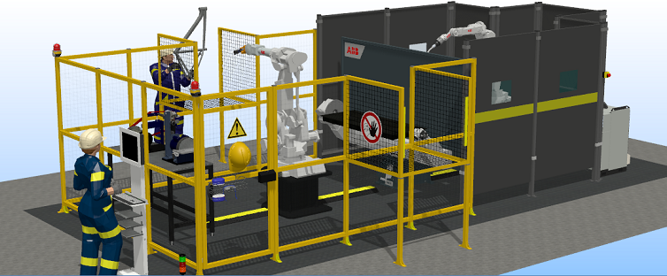
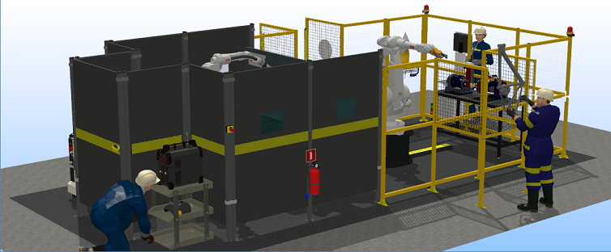
| RIESGO | MÉTODO Y EQUIPO NECESARIO | FOTO |
| Movimientos del manipulador en la celda. Funcionamiento irregular de la celda que pueda desencadenar en un movimiento golpe, traumatismo o daño a equipos. | Ubicación de paros de emergencia en lugares de fácil acceso al operario, o supervisor de celda. Parada de emergencia. Tarjeta de seguridad X11 CAT3. (Robot) | 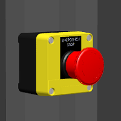 |
| Movimientos del manipulador en la celda. Robot realice movimientos programados fuera de la celda de trabajo que pueda representar un riesgo para el personal al exterior. | Limitación del espacio de trabajo del robot dada su configuración en la celda. Utilizar la configuración de limitación de áreas y zonas del robot. |  |
| Movimientos del manipulador en la celda. Ingreso de personal no autorizado dentro de la celda durante la operación normal del manipulador que pueda resultar en golpes o traumatismos contra el personal. | Instalación de una barrera fisica alrededor del manipulador para evitar el ingreso de personas no autorizadas. Cerramiento de seguridad por barreras físicas conforme la normatividad. | 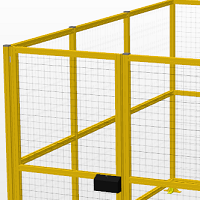 |
| Movimientos del manipulador en la celda. Ingreso de personal no autorizado dentro de la celda durante la operación normal del manipulador que pueda resultar en golpes o traumatismos contra el personal. | Demarcación de advertencia en la zona con avisos de seguridad. Señales de piso, pared y avisos de advertencia alrededor de la celda. | 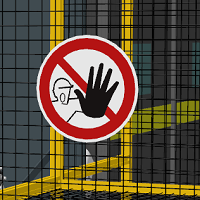 |
| Movimientos del manipulador en la celda. Ingreso de personal no autorizado dentro de la celda durante la operación normal del manipulador que pueda resultar en golpes o traumatismos contra el personal. | Garantizar que el manipulador se detenga en el caso de ingreso de personal por las puertas de acceso. Sensor de guardas conectadas a cerrojos de seguridad para pausar la operación. | 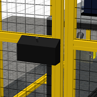 |
| Movimientos del manipulador en la celda. Ingreso de personal no autorizado dentro de la celda durante la operación normal del manipulador que pueda resultar en golpes o traumatismos contra el personal. | Garantizar que el manipulador se detenga en el caso de ingreso de personal por las áreas de entrada y salida de material. Sensor de cortinas de seguridad en zonas de entrada y salida. Barreras físicas adaptadas para la entrada y salida a medida del material esperado." | 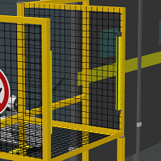 |
| Movimientos del manipulador en la celda. Caída del producto durante el movimiento del manipulador debido a una falla eléctrica o neumática. | EOAT (End Of Arm Toolings) con retención de posición en caso de falla de energia. Herramienta adaptada con accionamiento neumático. | 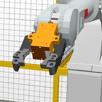 |
| Soldadura por arco eléctrico. Choque eléctrico producto de una falla en la instalación y ajuste de la máquina al interior de la celda. | Evitar el contacto directo del personal con elementos conductores que puedan provocar un choque eléctrico al interior de la celda. Instalación eléctrica con protección y de cableado al interior de la celda. | 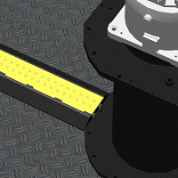 |
| Soldadura por arco eléctrico. Deslumbramiento y/o irritación y escozor ocular provocados por la intensidad del arco eléctrico y la exposición a radiación no ionizante al exterior de la celda. | Encerramiento del espacio de trabajo con protección visual según normativa para evitar la visibilidad del arco eléctrico al exterior de la celda. Barreras físicas y paneles opacos, con ventana de protección para soldadura para supervisión del proceso. | 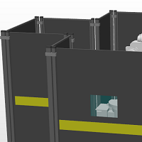 |
| Soldadura por arco eléctrico. Proyección y manipulación de residuos sólidos expulsados y adheridos a la pieza (escoria) al igual que partículas incandescentes desprendidas durante la soldadura. | Encerramiento del espacio de trabajo para evitar la expulsión de residuos a personal en el exterior de la celda de trabajo. Barreras físicas alrededor del espacio de trabajo para bloquear el material particulado. | 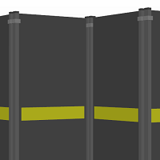 |
| Soldadura por arco eléctrico. Inhalación de humos metálicos y gases tóxicos producto del consumo del revestimiento y la fusión del metal de la soldadura de arco. | Implementar un sistema de ventilación para eliminar los gases al interior de la celda. Sistemas de extracción y ventilación industrial para procesos de soldadura. | 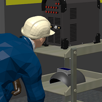 |
| Soldadura por arco eléctrico. Riesgos anteriores aplicados para operación en el interior de la celda. | Exigir el uso obligatorio de los elementos de protección personal e implementar la señalización adecuada. Careta para soldadura. Tapabocas/Mascarilla. Guantes de carnaza. Peto/Pechera de soldar. Botas punta de acero. Overol de trabajo. | 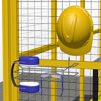 |
| Desbaste, lijado y pulido. Fricción o abrasión con la pieza de trabajo o la máquina-herramienta. | Exigir el uso obligatorio de los elementos de protección personal al interior de la celda e implementar la señalización adecuada. "Gafas de protección. Guantes de seguridad. Botas punta de acero. Overol de trabajo. | 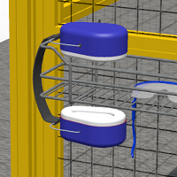 |
| Desbaste, lijado y pulido. Expulsión e inhalación de material residual particulado resultado del proceso de mecanizado. | Encerramiento del espacio de trabajo para evitar la expulsión de residuos a personal en el exterior de la celda de trabajo. Barreras físicas alrededor del espacio de trabajo para bloquear el material particulado. | 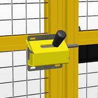 |
| Desbaste, lijado y pulido. Ruido producido por la interacción entre las herramientas y la pieza a trabajar. | Exigir el uso obligatorio de los elementos de protección para operarios que trabajan junto a la celda e implementar la señalización adecuada. Orejeras o protectores auditivos. | 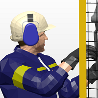 |
| Desbaste, lijado y pulido. Choque eléctrico por contacto con elementos en tensión o atrapamiento y/o arrastre con elementos de transmisión. | Garantizar que las máquinas - herramientas al interior de la celda se desenergicen si el personal accede a la celda o a proximidad del banco de trabajo. Interruptor de apagado automático accionado por la apertura de la cerradura. |
| Entrada y salida de material de la celda. Golpes o colisión con operarios en la zona de salida. | Verificar que el área se encuentre despejada previo a la salida del producto de la celda. Barreras físicas y señalamiento a la salida de la celda. | 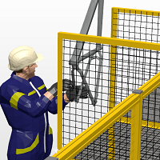 |
| Entrada y salida de material de la celda. Robot inicie movimiento con personal dentro de la celda. | Verificación de cerrojos de seguridad en las puertas de acceso, cortinas de seguridad y sensores activos, con panel de comandos desde HMI y pulsadores fuera de la celda. Luces de alerta y semáforo para alertar en caso de cualquier irregularidad en el funcionamiento de los sistemas de seguridad. | 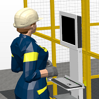 |
| Entrada y salida de material de la celda.Posición inadecuada del personal al manipular productos a la entrada o salida de la celda. | Garantizar que los productos a la entrada y saldia puedan ser manipulados sin que el operario debe tomar posiciones perjudiciales para su ergonomía. Transporte de entrada y salida a la celda por sobre los 90cms del suelo. | 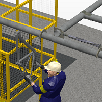 |
| Tareas de mantenimiento en la celda. Golpe o atrapamiento de robot u otros equipos en movimiento cuando se realicen tareas de mantenimiento o limpieza. | Asegurar que cuando una persona ingrese por la puerta, los equipos se detengan y no puedan volver a iniciar hasta su salida y reseteo. Cerradura con bloqueo para no permitir cerrar la puerta si se está en mantenimiento. | 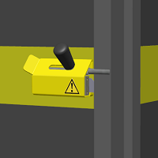 |
| Tareas de mantenimiento en la celda. Golpe o atrapamiento de robot u otros equipos en movimiento cuando se realicen tareas de mantenimiento o limpieza. | Garantizar que cuando la celda se encuentre en mantenimiento, todo equipo eléctrico se encuentre inhabilitado. Interruptor principal de energia electrica de la celda con disponibilidad para bloqueo por candado en posición de apagado. | 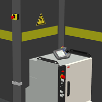 |
| Tareas de mantenimiento en la celda. Golpe o atrapamiento de robot u otros equipos en movimiento cuando se realicen tareas de mantenimiento o limpieza. | Asegurar una apertura rápida de las puertas desde el interior de la celda. Seguro rápido de apertura de puertas sin restricciones al interior de la celda. | 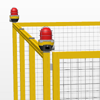 |
En ésta sección se incluyen los enlaces de descarga para todos los archivos generados en el desarrollo de la celda robótica conforme se solicitan entre los entregables requeridos en el enunciado del proyecto integrado. Los enlaces presentados corresponden a los archivos cargados en el repositorio de GitHub, el cuál también es accesible ingresando aquí.
PACK AND GO
Para poder compartir la celda completa junto con todos los archivos dependientes del proyecto, se crea un paquete de la estación activa que incluye los controladores virtuales, las bibliotecas y demás medios adicionales en un único archivo Pack and Go, en formato.RSPAG. Esta caracterítica de RobotStudio® permite empaquetar el proyecto para compartirlo con otras personas sin omitir ningún posible archivo necesario para su correcta ejecución.

LIBRERÍAS DE ROBOTSTUDIO
Para los elementos que componen la celda de trabajo, se utilizaron múltiples modelos CAD de uso gratuito disponibles en diferentes repositorios web y en formato compatible para su edición desde Autodesk Inventor®. Estos diseños se modificaron acorde a los requerimientos de nuestro proyecto y se guardaron en un formato .SAT para ser importados como geometría desde RobotStudio®. Finalmente, se guardaron como librerías en formato .RSLIB para su posterior uso en la contrucción de la celda de manufactura robótica.

ARCHIVOS DE PROGRAMA RAPID
Dado que se implementaron dos robots manipuladores y un mecanismo posicionador asociados a un único controlador,se generaron tres programas de código por medio de RAPID (T_ROB1, T_ROB2 y T_POS1) en el entorno de RobotStudio®, cada uno de estos archivos contiene la definición de los puntos, espacios de trabajo, trayectorias, herramientas, etc., y en general toda la información correspondiente a las tareas de cada uno de los mecanismos.